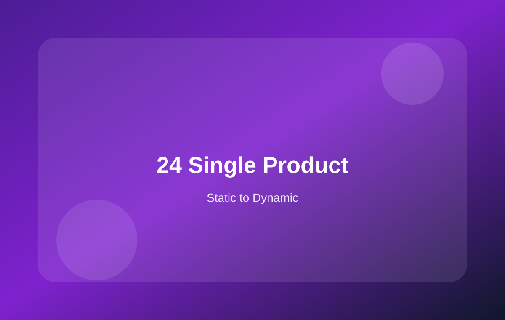

24 产品详情动态化：从静态详情页到 Single Product
更详细地整理品牌产品详情页如何接入标题、价格、SKU、短描述、主图、图集和购买按钮。

本页学习重点
产品详情动态化：建议分 4 次做
先接基础信息标题、价格、SKU、短描述。这个阶段最容易验证数据是否正确。
再接产品图片主图、产品图集、缩略图。Swiper 可以继续使用，只是 slide 改为动态循环。
再接购买区域数量、Add to Cart、库存状态、简单产品 / 可变产品不同表现。
最后接扩展内容详情 Tab、相关产品、Upsell、Cross-sell、技术参数、下载资料。
单产品页面常见动态字段
| 页面区域 | 动态数据 / 函数 | 备注 |
|---|---|---|
| 标题 | the_title() | 当前产品标题 |
| 价格 | $product->get_price_html() | 保留 WooCommerce 原始价格 HTML 更安全 |
| SKU | $product->get_sku() | 空 SKU 时要隐藏这一行 |
| 短描述 | woocommerce_template_single_excerpt() | 后台产品短描述字段 |
| 主图 | get_the_post_thumbnail() | 可放入 Swiper 第一个 slide |
| 图集 | $product->get_gallery_image_ids() | 循环输出 Swiper 其他 slide |
| 购买按钮 | woocommerce_template_single_add_to_cart() | 简单产品和可变产品会自动不同 |
Swiper 图集动态化思路
<div class="swiper-wrapper">
<div class="swiper-slide">
<?php echo get_the_post_thumbnail( $product->get_id(), 'large' ); ?>
</div>
<?php foreach ( $product->get_gallery_image_ids() as $image_id ) : ?>
<div class="swiper-slide">
<?php echo wp_get_attachment_image( $image_id, 'large' ); ?>
</div>
<?php endforeach; ?>
</div>
产品详情页不要急着改的部分
- 可变产品表单先保留 WooCommerce 默认输出
- 库存、税费、价格区间不要先手写死
- 评论和评分可以后期再接
- 相关产品可以先用默认 related products，后期再美化
本页总结
产品详情页建议分阶段动态化：基础信息、产品图集、购买区域、扩展内容。这样更容易定位问题。